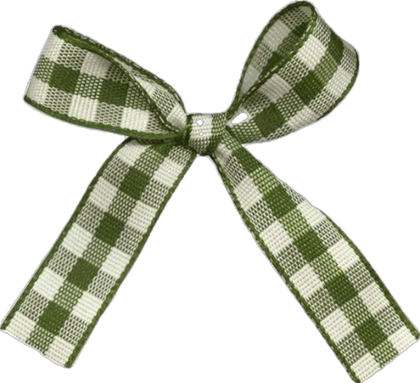
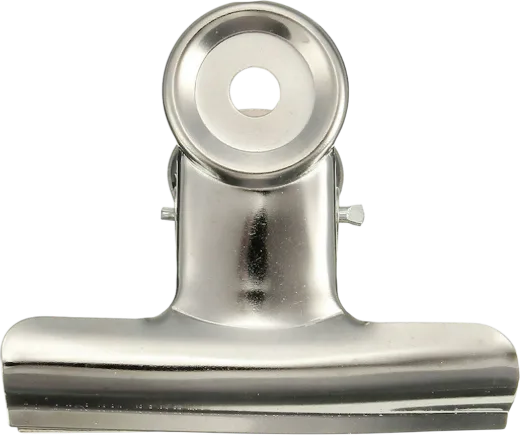
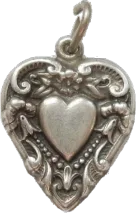
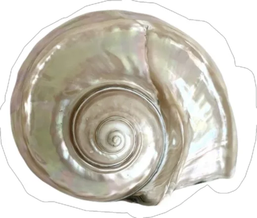
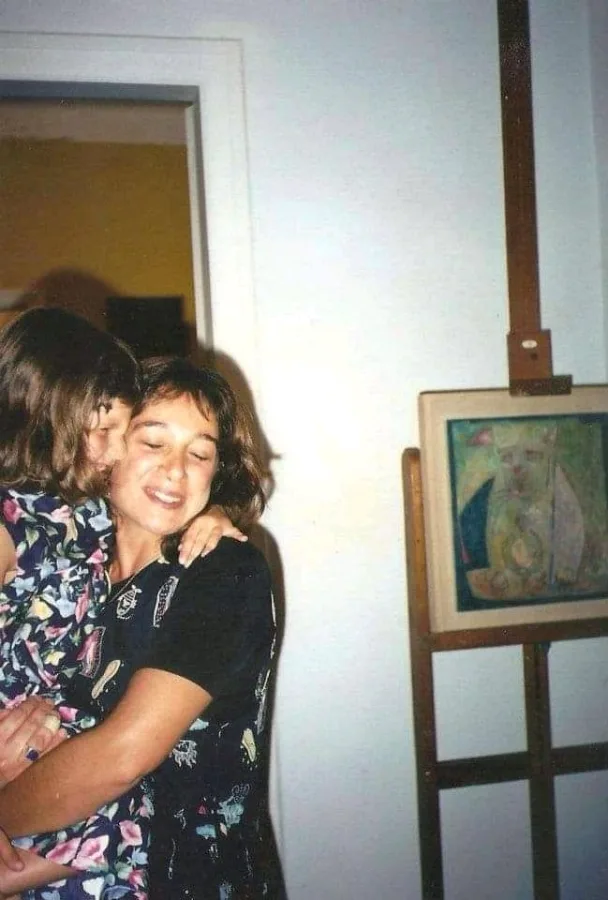

Mapa Vintage: ropa vintage y segunda mano en Buenos Aires
Ver mapaEncontrá locales a la calle, filtrá por barrio, prendas y precios, y armá tu recorrido.
Estamos cargando los locales.
Cargando el mapa de Buenos Aires…
Armá tu recorrido
Elegí qué querés encontrar, cuánto tiempo tenés y por dónde te gustaría caminar.
Buenos Aires para recorrer, de perchero en perchero.
Sumá un espacio
¿Tenés un local o conocés uno que falta? ¿Organizás una feria o evento? Sumalo. Revisamos cada propuesta antes de publicarla.
Mapa Vintage reúne locales a la calle de ropa vintage y segunda mano en CABA, con al menos un 60% del catálogo dedicado a estas prendas. Las ferias y eventos se reciben para la agenda. No incluimos tiendas que funcionen exclusivamente online.
Información
Glosario
En el universo de lo vintage circulan términos que se usan de forma intercambiable pero que no quieren decir exactamente lo mismo. Esta guía es un diccionario para entender esas diferencias.
Vintage
Mínimo 20 años de antigüedad. Ropa que refleja fielmente el diseño, técnicas de confección o materiales de su época. Terminaciones que la industria rápida abandonó (cierres metálicos, botones de nácar, tejidos puros).
Retro
Fabricación reciente o contemporánea. Indumentaria actual que recrea la estética o tendencias del pasado. No posee valor histórico.
Antiguo
Un siglo o más de historia. Tiene un valor más cercano al coleccionismo, la conservación museística o histórica.
Segunda Mano / Thrift
Sin restricción de antigüedad. Prendas que regresan al circuito de consumo alargando su ciclo de vida y promoviendo la economía circular y precios accesibles.
Upcycling
Confección artesanal y rediseño a partir de descarte textil para producir piezas de autor nuevas y exclusivas.
Cuidados
La ropa dura más cuando mejor la tratás. Descubrí cómo cuidar tus prendas.

Seda
La seda es una fibra natural muy delicada. Si la etiqueta lo permite, lavala a mano, con agua fría y jabón neutro para prendas delicadas. Nunca la retuerzas ni la escurras con fuerza. Si la prenda es liviana y no se deforma al colgarla, dejala secar por goteo, en una percha y siempre a la sombra. Evitá el sol directo, la secadora y los secadores de pelo, que pueden dañar y decolorar el tejido. El secado por goteo permite conservar su caída natural y evita la necesidad de planchar la prenda.
Satén
El satén no es una fibra, sino una forma de tejido: puede estar hecho de seda, poliéster o acetato. Por eso, antes de lavarlo, revisá su composición. Si es de seda, seguí los cuidados de esa fibra. Si es sintético, puede admitir lavarropas en un ciclo delicado y con agua fría, siempre que la etiqueta lo indique. Usá jabón líquido suave y evitá retorcer la prenda. Para secarla, dejala al aire y a la sombra, sin deformarla. Evitá la secadora y el calor excesivo, que pueden alterar su textura y su brillo.
Lana
La lana repele la suciedad de forma natural, así que no necesita lavarse después de cada uso. Muchas veces con ventilarla alcanza. Cuando toque lavarla, hacelo a mano con agua fría y jabón líquido, o usá el programa específico si la etiqueta lo permite. Evitá frotarla, los cambios bruscos de temperatura y el centrifugado intenso. Nunca la cuelgues mojada: el peso del agua puede deformarla. Retirá el exceso de humedad con una toalla y dejala secar extendida en horizontal. Guardá los sweaters limpios y doblados, nunca en perchas. Evitá la naftalina. En su lugar podés poner bolsitas de lavanda en el placard para repeler a las polillas.
Cashmere
El cashmere necesita cuidados similares a los de la lana, pero conviene priorizar el lavado a mano. Usá agua fría y jabón para lana o prendas delicadas, masajeando suavemente sin frotar. Para secarlo, enrollá el sweater en una toalla y presioná para absorber el exceso de agua. Después, dejalo extendido sobre una superficie plana, sin estirar las fibras. Es normal que el roce genere pilling, esas pequeñas bolitas que aparecen con el uso. Retiralas con un peine específico para cashmere o una máquina quitapelusas adecuada, con mucha suavidad para no desgastar el tejido. Guardalo limpio, seco y doblado.
Lino
El lino es resistente, fresco y transpirable, aunque tiene una particularidad: se arruga con facilidad. Y sí, esas arrugas son parte de su encanto. Podés lavarlo en lavarropas con un ciclo delicado, agua fría y centrifugado suave, siempre que la etiqueta lo permita. Evitá el calor excesivo porque puede encoger. Para secarlo, colgalo bien estirado o dejalo en plano, a la sombra. Si necesitás plancharlo, hacelo del revés, mientras todavía esté ligeramente húmedo, con vapor y una temperatura adecuada a su composición. Si te encanta la ropa sin arrugas, el lino quizás no sea para vos.
Denim
El jean no necesita lavarse después de cada uso. Si no está sucio, podés airearlo y volver a usarlo: así ayudás a preservar el color y la forma. Cuando lo laves, hacelo del revés, con agua fría y, especialmente si es nuevo u oscuro, por separado para evitar que destiña. Evitá los suavizantes, que pueden afectar las fibras elásticas de los jeans con elastano. Para secarlo, colgalo del revés y a la sombra, sin recurrir a la secadora: el calor puede encoger el tejido y acortar su vida útil. La plancha generalmente no hace falta.
Algodón
El algodón es versátil y resistente, pero también puede encogerse con el calor. Para conservar tus prendas, lavalas según la etiqueta y, cuando sea posible, con agua fría o tibia. Separá los colores claros de los oscuros y evitá sobrecargar el lavarropas, para que las prendas se limpien correctamente y sufran menos fricción. Para secarlas, el aire suele ser suficiente y ayuda a reducir el desgaste. Si tienen estampas, bordados o detalles delicados, lavarlas del revés es un buen recurso para protegerlos. Prestá especial atención a las prendas antiguas, que pueden tener fibras o costuras debilitadas.
Tul y encaje
El tul y el encaje son delicados: un cierre, un gancho o un roce fuerte pueden engancharlos. Lavá estas prendas preferentemente a mano, con agua fría y jabón suave, sin frotar ni retorcer. Si la etiqueta permite el lavarropas, usá un ciclo delicado y una bolsa de lavado para protegerlas. Dejalas secar al aire y a la sombra, sin estirarlas ni colgarlas de puntos frágiles. Evitá la secadora y el contacto directo con la plancha, especialmente en materiales sintéticos. Para guardarlas, doblalas con cuidado y mantenelas separadas de accesorios que puedan enganchar los hilos.
Plisado
Los pliegues son parte del diseño, así que el objetivo es conservarlos. Antes de lavar una prenda plisada, revisá la etiqueta: según la tela y el tipo de plisado, puede necesitar limpieza profesional. Evitá retorcerla, aplastarla o dejarla amontonada mientras está húmeda. Para guardarla, colgala si la estructura lo permite y asegurate de que tenga espacio para que los pliegues no se deformen. No la planches directamente ni intentes rehacer los pliegues con calor sin conocer la composición. Algunos plisados son permanentes, pero otros pueden desaparecer con el lavado o una temperatura inadecuada.
Tapados de paño
Un buen tapado puede acompañarte durante años. Después de usarlo, dejalo ventilar y retirale el polvo con un cepillo suave, siguiendo la dirección del tejido. No necesita lavarse seguido y muchas veces alcanza con airearlo. Antes de limpiarlo, revisá la etiqueta: por su estructura, forro y entretelas, algunos tapados necesitan limpieza profesional. Al terminar la temporada, guardalo limpio y completamente seco, en una percha ancha que sostenga bien los hombros. Mantenelo en un lugar ventilado, lejos de la humedad, y evitá la naftalina. En su lugar podés colocar bolsitas con lavanda para repeler a las polillas.
Lencería
La lencería necesita cuidados que respeten sus materiales y su confección. El encaje, las puntillas, la microfibra y los elásticos delicados pueden deteriorarse con la fricción y el calor. Priorizá el lavado a mano con agua fría y jabón suave, especialmente en piezas con aros, bordados o aplicaciones. Si la etiqueta permite el lavarropas, usá una bolsa de lavado y cerrá los ganchos de los corpiños. Evitá retorcer las prendas y dejalas secar al aire. No cuelgues los corpiños de los breteles cuando están mojados: el peso puede estirarlos y hacerles perder sujeción.
Trajes de baño
El cloro, la sal y los protectores solares pueden deteriorar las fibras elásticas y alterar los colores. Después de cada uso, enjuagá la malla con agua fría para retirar los residuos. Lavala a mano con jabón suave y no la retuerzas para escurrirla. Dejala secar a la sombra, lejos de fuentes de calor: el sol directo y la secadora pueden debilitar el elastano. Y un detalle clave: no la guardes húmeda ni hecha un bollo en una bolsa. Antes de guardarla hasta el próximo verano, asegurate de que esté completamente limpia y seca.
Cuero
Una buena campera de cuero puede durar décadas si la cuidás bien. Después de usarla, dejala ventilar y retirale el polvo con un paño suave y seco. Evitá mojarla y, si se humedece, dejala secar naturalmente, lejos del sol directo, las estufas y los secadores de pelo. Nunca la metas en el lavarropas. Para evitar que el cuero liso se reseque o se agriete, podés aplicar ocasionalmente un acondicionador específico, probándolo antes en una zona poco visible. Guardá las prendas en perchas anchas, en un lugar fresco y ventilado, sin fundas de plástico.
Estampas
Las estampas necesitan especial cuidado para conservar sus colores y evitar que se agrieten o despeguen. Lavá las prendas del revés, con agua fría y detergente suave, siempre que la etiqueta lo permita. Evitá la fricción intensa y, si usás lavarropas, elegí un ciclo delicado. Para secarlas, mantenelas del revés y a la sombra, porque la exposición prolongada al sol puede decolorarlas. Nunca apoyes la plancha directamente sobre una estampa: el calor puede derretir o levantar ciertos diseños. Si necesitás planchar, hacelo del revés y a una temperatura adecuada para la tela.
Gamuza
La gamuza tiene una textura suave y aterciopelada, pero es especialmente sensible al agua, la grasa y las manchas. Para mantenerla, usá un cepillo específico y pasalo suavemente en la dirección del pelo, sin frotar con fuerza. Si se moja, dejala secar naturalmente, lejos del sol y de cualquier fuente de calor. Evitá el lavarropas, los detergentes comunes y las cremas para cuero liso, que pueden alterar su textura. Para manchas difíciles, lo mejor es recurrir a una limpieza especializada. Guardá las prendas en un lugar seco y ventilado, preferentemente en una funda de tela que las proteja del polvo.
Tejidos a mano
Los tejidos a mano pueden deformarse con el peso, la fricción o los tirones. Antes de lavarlos, identificá la fibra y seguí sus cuidados específicos. Si la composición lo permite, conviene lavarlos a mano, con agua fría y movimientos suaves, sin frotar ni retorcer. Para secarlos, retirales el exceso de agua con una toalla y dejalos extendidos en horizontal, acomodando la prenda para recuperar su forma original. Nunca los cuelgues mojados. Si aparece un hilo suelto, no lo cortes ni tires de él: intentá llevarlo hacia el interior del tejido con cuidado. Guardalos doblados para evitar que se estiren.
Terciopelo
El terciopelo se distingue por su superficie suave y su brillo particular, pero el pelo del tejido puede aplastarse o marcarse con facilidad. Antes de lavarlo, revisá la etiqueta: algunas prendas admiten limpieza delicada y otras requieren limpieza profesional. Evitá frotar las manchas y nunca apoyes la plancha directamente sobre la superficie, porque podés dejar marcas permanentes. Si la etiqueta permite vapor, aplicalo con cuidado y sin presionar el tejido. Para guardar sacos o vestidos, usá perchas adecuadas y dejales espacio en el armario. Evitá doblarlos bajo otras prendas pesadas.
Lentejuelas y bordados
Las prendas con lentejuelas, mostacillas o bordados necesitan especial cuidado: una costura floja o un enganche pueden desprender los detalles. Antes de limpiarlas, revisá la etiqueta y observá cómo están sujetas las aplicaciones. Algunas admiten lavado a mano, pero otras requieren limpieza profesional, especialmente si tienen adornos pegados o delicados. Evitá frotar, retorcer o aplicar calor directamente sobre las decoraciones. Para guardarlas, protegé la superficie con papel de seda libre de ácido o una funda de tela, según el peso y la estructura de la prenda. Así evitás enganches y roces con otras prendas.
Antes de lavar, revisá siempre la etiqueta de cuidado y la composición de la prenda.
Agenda
Ferias y eventos para sumar a tu próximo paseo.

Todavía no hay próximas fechas publicadas. Si conocés una feria o estás organizando un evento, podés proponerlo.
Comunidad
Mandá tu fotoEste muro está por empezar. ¿Compartís el primer hallazgo?
Compartí
tu hallazgo
Una prenda heredada, una combinación inesperada, un recuerdo a través de una prenda. Compartí tu foto y su historia y formá parte del muro.
Sobre
Mapa Vintage

Hola, soy Lucia, así, sin tilde. Y esto es Mapa Vintage.
De chica siempre me gustó la pilcha. La dibujaba, inventaba vestidos con papel de diario y revistas, y pasaba horas jugando en la compu a Barbie diseña conmigo. Crecí en una casa de artistas, rodeada de colores y objetos hechos con las manos.
Hace unos años encontré esta foto de mi infancia. Mi mamá me tiene a upa. Lleva un vestido negro con dibujos de zapatos y botones de nácar. Hoy está en mi placard. Me gusta pensar que una prenda puede atravesar tantos años, cambiar de dueña y seguir teniendo algo para decir.
Quizás por eso me gusta comprar vintage y segunda mano. Por las telas, los detalles y la posibilidad de encontrar algo inesperado. Hay prendas que olvidé y otras que todavía recuerdo. Como ese jean que encontré a los doce, paseando por Almagro con papá. El cierre escondía un trébol de cuatro hojas y una inscripción: Lucky you. Y sí, me sentí afortunada.
Mapa Vintage nace de ese interés y de una necesidad concreta. Buenos Aires tiene muchísimos locales vintage y de segunda mano, pero la información está dispersa entre redes, recomendaciones y videos. La idea es reunirla y compartirla para que más personas accedan a ese circuito, sin depender de la tiranía del algoritmo y de la pauta.
También es una invitación a recorrer la ciudad. A entrar en un local, tocar las telas, mirar etiquetas, botones y terminaciones. A tomarse el tiempo de buscar y, con un poco de suerte, encontrar.
En una época en la que casi todo parece hecho para ser reemplazado, me gusta pensar en las cosas que duran. En las prendas que pasan de mano en mano y todavía tienen la chance de contar otra historia.
Mapa Vintage es una herramienta gratuita para descubrir esos lugares y armar tu propio recorrido. Porque hay muchas maneras de conocer una ciudad. Y esta es una de ellas.
Nos vemos en el mapa.

